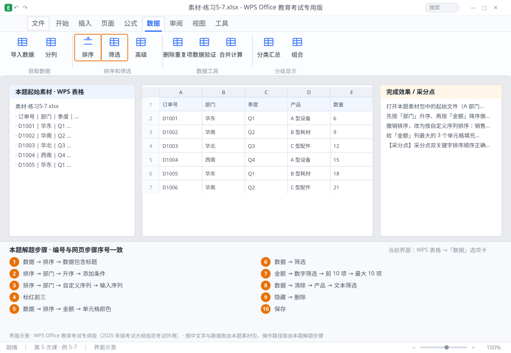

完成比对文档 · 例 5-7
双关键字排序 + 自定义序列 + 按颜色排序 + 自动筛选 ｜ 第 5 次课 / WPS 表格 ｜ 网页：实操-表格2.html ｜ 考试环境：WPS Office 教育考试专用版（2025 年版考试大纲指定考试环境）
用途 本页按修订后的题目要求与解题步骤生成，是交卷自查的结果基准：
逐项列出每一步应出现的可复核结果，配合模拟操作截图与解题结果文件使用。
它不是素材包的一部分，不会预置答案动作；起始素材仍从本题素材包下载。
一、本题起始素材包
目录：练习素材/练习5-7-排序与筛选/ ｜
下载包：练习素材/下载/练习5-7-排序与筛选.zip
二、题目要求
- 打开本题素材包中的起始文件（A 部门、B 姓名、C 产品、D 金额，20 行）。
- 先按「部门」升序、再按「金额」降序做双关键字排序。
- 撤销排序，改为按自定义序列排序：销售部 → 技术部 → 财务部 → 人事部。
- 给「金额」列最大的 3 个单元格填充红色，然后按单元格颜色排序（红色在前）。
- 用自动筛选筛选出「金额」前 10 项。
- 再改为筛选「产品」包含「笔记本」的记录。
- 保存为 学号-姓名-练习5-7.xlsx。
三、解题步骤（编号与下方核对表、截图编号一致）
- 排序的正确选法。点数据区任意一个单元格（不要全选整列）→「数据」→「排序」。WPS 会自动识别整张表。若手动选区域，务必包含表头并勾选「数据包含标题」。
- 双关键字。「排序」对话框 → 主要关键字「部门」、次序「升序」→ 点「添加条件」→ 次要关键字「金额」、次序「降序」→ 确定。
- 自定义序列。再次打开「排序」→ 主要关键字「部门」→ 次序下拉选「自定义序列」→ 在右侧列表里找「销售部, 技术部, 财务部, 人事部」；若没有，在「输入序列」框里逐行输入（每行一个）→「添加」→ 选中它 → 确定。
- 标红前三。先按金额降序排一次，把前 3 行的金额单元格填充红色 → 再按原有顺序恢复（或不恢复，题目只要求能排序）。
- 按颜色排序。「数据」→「排序」→ 主要关键字选「金额」→ 次序选「单元格颜色」→ 在颜色下拉里选红色、位置「在顶端」→ 确定。
- 开自动筛选。点数据区任一单元格 →「数据」→「筛选」（或 Ctrl+Shift+L）→ 表头出现下拉箭头。
- 前 10 项。点「金额」列的下拉箭头 →「数字筛选」→「前 10 项」→ 对话框里确认「最大 10 项」→ 确定。
- 文本包含。先清除上一步筛选（「数据」→「清除」）→ 点「产品」下拉箭头 →「文本筛选」→「包含」→ 输入「笔记本」→ 确定。
- 观察行号。筛选后左侧行号会跳号（如 1、3、7…），说明是「隐藏」而非「删除」，这一点常被考到。
- 保存。Ctrl+S。
四、完成效果 / 采分点
采分点双关键字排序顺序正确（部门升序 + 金额降序） · 自定义序列排序结果符合指定部门顺序 · 按单元格颜色排序红色在顶端 · 自动筛选前 10 项正确 · 文本包含筛选正确
五、逐项完成核对表
| 步骤 | 关键操作路径 | 应出现的结果（可复核） |
|---|
| 1 | 排序的正确选法 | 「数据」、「排序」、「数据包含标题」 |
| 2 | 双关键字 | 「排序」、「部门」、「升序」、「添加条件」、「金额」 |
| 3 | 自定义序列 | 「排序」、「部门」、「自定义序列」、「输入序列」、「添加」 |
| 4 | 标红前三 | 3 行 |
| 5 | 按颜色排序 | 「数据」、「排序」、「金额」、「单元格颜色」、「在顶端」 |
| 6 | 开自动筛选 | 「数据」、「筛选」 |
| 7 | 前 10 项 | 「金额」、「数字筛选」、「前 10 项」、「最大 10 项」 |
| 8 | 文本包含 | 「数据」、「清除」、「产品」、「文本筛选」、「包含」 |
| 9 | 观察行号 | 「隐藏」、「删除」 |
| 10 | 保存 | 保存 |
六、模拟操作截图

界面示意 · WPS Office 教育考试专用版 · 橙色编号与本题解题步骤序号一致；
图中文字与数据取自本题素材包，功能入口取自本题解题步骤。
核对方法：按网页解题步骤完成并另存自己的成稿后，逐行比对本表第 3 列的
参数、公式、区域、文件名与对象数量；再对照网页「完成效果 / 采分点」检查版式是否一致。